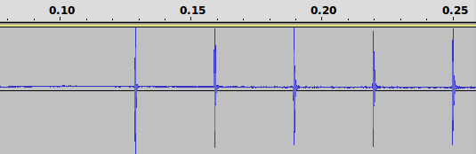

This page describes common methods for measuring input and output latency.
Measuring Output Latency
There are several techniques available to measure output latency, with varying degrees of accuracy and ease of running, described below. Also see the Testing circuit for an example test environment.
LED and oscilloscope test
This test measures latency in relation to the device's LED indicator. If your production device does not have an LED, you can install the LED on a prototype form factor device. For even better accuracy on prototype devices with exposed circuity, connect one oscilloscope probe to the LED directly to bypass the light sensor latency.
If you cannot install an LED on either your production or prototype device, try the following workarounds:
- Use a General Purpose Input/Output (GPIO) pin for the same purpose.
- Use JTAG or another debugging port.
- Use the screen backlight. This might be risky as the backlight may have a non-negligible latency, and can contribute to an inaccurate latency reading.
To conduct this test:
- Run an app that periodically pulses the LED at
the same time it outputs audio.
Note: To get useful results, it is crucial to use the correct APIs in the test app so that you're exercising the fast audio output path. See Design For Reduced Latency for background.
- Place a light sensor next to the LED.
- Connect the probes of a dual-channel oscilloscope to both the wired headphone jack (line output) and light sensor.
- Use the oscilloscope to measure the time difference between observing the line output signal versus the light sensor signal.
The difference in time is the approximate audio output latency, assuming that the LED latency and light sensor latency are both zero. Typically, the LED and light sensor each have a relatively low latency on the order of one millisecond or less, which is sufficiently low enough to ignore.
Measuring Round-Trip Latency
Round-trip latency is the sum of output latency and input latency.
Larsen test
One of the easiest latency tests is an audio feedback (Larsen effect) test. This provides a crude measure of combined output and input latency by timing an impulse response loop. This test is not very useful for detailed analysis by itself because of the nature of the test, but it can be useful for calibrating other tests, and for establishing an upper bound.
This method does not break down the component times, which is important when the output latency and input latency are independent. So this method is not recommended for measuring precise output latency or input latency values in isolation, but might be useful for establishing rough estimates.
Output latency to on-device speaker can be significantly larger than output latency to headset connector. This is due to speaker correction and protection.
To conduct this test:
- Run an app that captures audio from the microphone and immediately plays the captured data back over the speaker.
- Create a sound externally, such as tapping a pencil by the microphone. This noise generates a feedback loop. Alternatively, one can inject an impulse into the loop using software.
- Measure the time between feedback pulses to get the sum of the output latency, input latency, and application overhead.
Here are some resources for getting an app for the Larsen test:
- The Dr. Rick O'Rang loopback app is an Android app for audio feedback testing. You can download the app from Google Play or get the source code from GitHub.
-
We also published an example implementation at
slesTestFeedback.cpp.
This is a command-line app and is built using the platform build environment;
however it should be straightforward to adopt the code for other environments.
You will also need the non-blocking FIFO code
located in the
audio_utilslibrary.
Audio Loopback Dongle
The Dr. Rick O'Rang audio loopback dongle is handy for measuring round-trip latency over the headset connector. The image below demonstrates the result of injecting an impulse into the loop once, and then allowing the feedback loop to oscillate. The period of the oscillations is the round-trip latency. The specific device, software release, and test conditions are not specified here. The results shown should not be extrapolated.
Figure 1. Round-trip measurement
You may need to remove the USB cable to reduce noise, and adjust the volume level to get a stable oscillation.
Measuring Input Latency
Input latency is more difficult to measure than output latency. The following tests might help.
One approach is to first determine the output latency using the LED and oscilloscope method and then use the audio feedback (Larsen) test to determine the sum of output latency and input latency. The difference between these two measurements is the input latency.
Another technique is to use a GPIO pin on a prototype device. Externally, pulse a GPIO input at the same time that you present an audio signal to the device. Run an app that compares the difference in arrival times of the GPIO signal and audio data.
Reducing Latency
To achieve low audio latency, pay special attention throughout the
system to scheduling, interrupt handling, power management, and device
driver design. Your goal is to prevent any part of the platform from
blocking a SCHED_FIFO audio thread for more than a couple
of milliseconds. By adopting such a systematic approach, you can reduce
audio latency and get the side benefit of more predictable performance
overall.
Audio underruns, when they do occur, are often detectable only under certain conditions or only at the transitions. Try stressing the system by launching new apps and scrolling quickly through various displays. But be aware that some test conditions are so stressful as to be beyond the design goals. For example, taking a bugreport puts such enormous load on the system that it may be acceptable to have an underrun in that case.
When testing for underruns:
- Configure any DSP after the app processor so that it adds minimal latency.
- Run tests under different conditions such as having the screen on or off, USB plugged in or unplugged, WiFi on or off, Bluetooth on or off, and telephony and data radios on or off.
- Select relatively quiet music that you're very familiar with, and which is easy to hear underruns in.
- Use wired headphones for extra sensitivity.
- Give yourself breaks so that you don't experience "ear fatigue."
Once you find the underlying causes of underruns, reduce the buffer counts and sizes to take advantage of this. The eager approach of reducing buffer counts and sizes before analyzing underruns and fixing the causes of underruns only results in frustration.
Tools
systrace is an excellent general-purpose tool
for diagnosing system-level performance glitches.
The output of dumpsys media.audio_flinger also contains a
useful section called "simple moving statistics." This has a summary
of the variability of elapsed times for each audio mix and I/O cycle.
Ideally, all the time measurements should be about equal to the mean or
nominal cycle time. If you see a very low minimum or high maximum, this is an
indication of a problem, likely a high scheduling latency or interrupt
disable time. The tail part of the output is especially helpful,
as it highlights the variability beyond +/- 3 standard deviations.